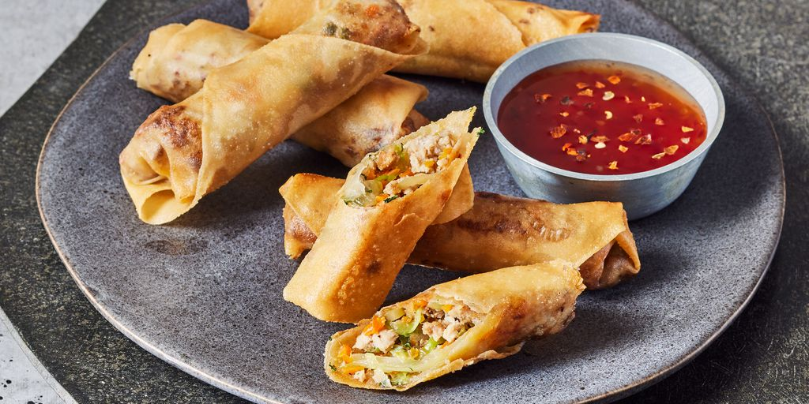

Lumpia

Description
Lumpia, often referred to as Filipino spring rolls, is a beloved dish that exemplifies the rich culinary heritage of the Philippines.
These delightful rolls are typically made by filling thin, delicate wrappers with a mixture of savory ingredients.
The most common filling includes ground pork or beef, finely chopped vegetables like carrots, onions, and green beans, and sometimes shrimp or other seafood.
This filling is seasoned with garlic, salt, pepper, and soy sauce to enhance its flavors.
Once the mixture is prepared, it is carefully wrapped in the lumpia wrappers, rolled tightly, and then fried until golden brown and crispy.
The result is a perfect combination of a crunchy exterior and a savory, flavorful interior.
Lumpia is often served as an appetizer or snack and is a staple at Filipino gatherings and celebrations.
It is typically accompanied by a dipping sauce, with sweet chili sauce being a popular choice.
The dish is cherished for its versatility, as it can be adapted to include a variety of fillings, including vegetarian options.
Beyond its taste, lumpia holds a special place in Filipino culture, symbolizing hospitality and the joy of sharing food with loved ones.
Whether enjoyed hot and fresh from the fryer or at room temperature, lumpia remains a crowd-pleaser that embodies the warmth and richness of Filipino cuisine.
Ingredients
Filling
- 1 pound ground pork or beef
- 1 cup finely chopped carrots
- 1 cup finely chopped green beans
- 1 cup finely chopped cabbage
- 1 small onion, finely chopped
- 2 cloves garlic, minced
- 1/4 cup soy sauce
- 1/2 teaspoon salt
- 1/2 teaspoon ground black peppe
- 1 egg (optional, to help bind the filling)
Wrappers
- 30 lumpia wrappers (spring roll wrappers)
Frying
- Vegetable oil (for deep frying)
Dipping Sauce
- Sweet chili sauce or vinegar with minced garlic and a pinch of salt
Steps
-
Prepare the Filling
- In a large bowl, combine the ground pork or beef, chopped carrots, green beans, cabbage, onion, and minced garlic.
- Add the soy sauce, salt, and ground black pepper. Mix well to combine all ingredients evenly. Optionally, add one beaten egg to help bind the filling.
-
Assemble the Lumpia
- Lay a lumpia wrapper on a flat surface with one corner pointing towards you (like a diamond shape).
- Place about 1-2 tablespoons of the filling near the corner closest to you.
- Fold the corner over the filling, then fold in the sides, and roll up tightly but gently to form a neat roll. Seal the end with a bit of water or a beaten egg to keep it closed.
-
Fry the Lumpia
- Heat vegetable oil in a deep frying pan or pot over medium-high heat.
- Once the oil is hot, carefully add the lumpia in batches, frying until golden brown and crispy, about 3-5 minutes per batch.
- Remove the lumpia from the oil and drain on paper towels to remove excess oil.
-
Serve
- Serve hot with sweet chili sauce or your preferred dipping sauce.